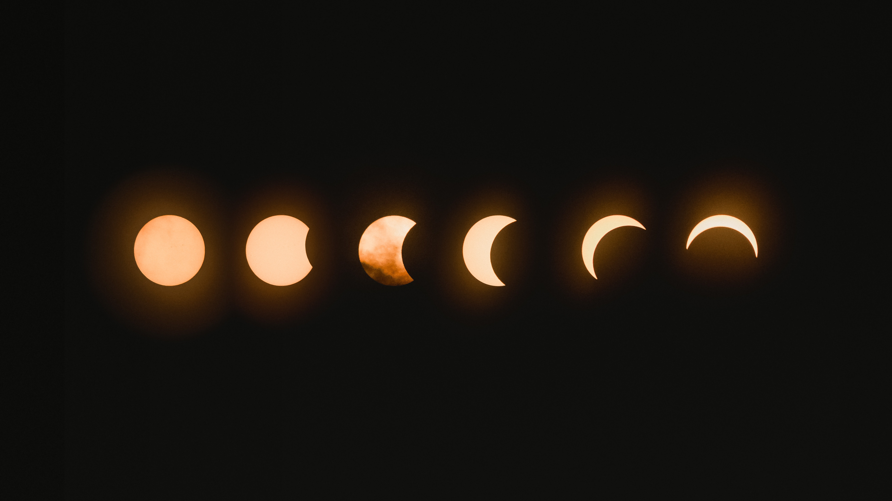

아관파천은 고종이 신변안전을 위하여 러시아 대사관으로 피신한 사건이다.
인물간의 미묘한 심리를 전달하는 각본, 흥미로운 설정, 주제의식을 효과적으로 전달하면서도 긴장감을 놓치지 않는 전개를 강점으로 삼는 작품이다.  귀여운 작화와 부드러운 파스텔 톤의 세련된 배경을 보이는 아름다운 영상미로 저연령층이 접하기 쉽지만 비극적인 죽음이나 애증, 집착, 전쟁과 처벌, 데이트 폭력, 성 소수자 문제 같은 무거운 요소에 대한 묘사가 있으며, 오래 해소되지 않아 곯은 상처나 급변하는 주변환경, 방치, 정체성 혼란 등 각종 감정적 극한상황이 자주 묘사되는 편이다.여기다 아이보단 어른을 대상으로 하는 암시도 잊을 만 하면 사용되어 주력 연령대는 그리 낮지 않다.
대략 시즌 1 1회부터 26회까지는 실제로 저연령층을 적극적으로 노린 듯 이러한 무거운 소재들의 사용이 적었으며,
스티븐이 문제를 일으키거나 있는 문제를 더 크게 만들고 그것을 스티븐이 직접 해결하는 구조를 반드시 유지했으나 시즌 1 중반 이후로는 그렇지 않다.